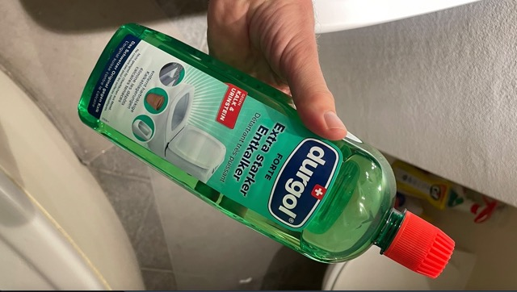

Chapter 2 Badezimmer
Hier lernst du alle “Tricks”, für dein Badezimmer.
2.1 Lavabo
2.1.1 Entstopfen der Lavabo-Röhre
- Kaufe dir einen Abflussreiniger, zum Beispiel hier
- Fülle das verstopfte Lavabo mit Wasser, wie in diesem Youtube-Video.
- Dann bring den Abflussreiniger auf den Abfluss und pumpe das Wasser mit viel Druck in den Abfluss. Mache dies, bis der verstopfte Dreck rauskommt.
- Lasse viel Wasser aus dem Wasserhahn ins Becken. Es sollte nun nicht mehr verstopft sein :)
2.2 WC
2.2.1 Entkalkung von Urinstein: Anleitung
- Nehme 1/4-Liter Essig und giesse es ins WC (genau so).
- Anschliessend, nimmst du 2 Backpulver und giesst es auch ins WC (genau so)
- Nun heisst es warten, circa 5 bis 10 Minuten, damit die chemische Reaktion ihren Effekt ausübt.
- Zu guter Letzt mit der Klo-Bürste alles abschrubben und die Spülung betätigen –> Tadah! :D
2.2.2 Tiefenreinigung WC: Durgol-Putzmittel
Im Coop gibt es das Mittel namens “Durgol”. Hier das Produkt:

Produkt namens Durgol aus dem Coop.
Anleitung (auf französisch): Pour le calcaire au fond de la cuvette des chiottes, c‘est le puissant Durgol en bouteille verte qu‘il faut acheter. Ce truc est ultra-efficace:
- Tu pousses un peu le trop-plein d’eau de la cuve avec la brosse à chiottes, pour éviter qu‘il n‘y ai trop d’eau au fond de la cuve.
- Tu verses 1/3 de la bouteille de Durgol vert pur dans la cuvette,
- Et puis tu laisses agir 4h.
(Erwartetes) Resultat: Quand tu tireras la chasse au bout des 4h, le fond de la cuvette sera comme neuf ! Génial, et sans se fatiguer à gratter et autres…
2.3 Putzen der gesamten Wohnung
Folgende Putz-Instrumente solltest du bereit haben:
- Staubsauger (im Keller),
- "Schüfferli & Wüscherli (beim Radiator in der nähe des Esstisches),
- Starke Taschenlampe von Tee, um den Boden zu beleuchten, da dieser sehhhr dunkel ist bei uns (beim Eingang),
- Feuchtaufnehmer mit langem Stab spezifisch für Parkett (neben Kleiderschrank im Schlafzimmer),
- Swiffer (in Schublade vom Fernsehmöbel),
- Cif-Putzmittel (vis-à-vis vom Bad verstaut im offenen Schrak),
- WC-Entkalker Putzmittel (vis-à-vis vom Bad verstaut im offenen Schrak),
- Schimmel-Entferner (vis-à-vis vom Bad verstaut im offenen Schrak),
- 4 verschiedene Schwämme vom Badezimmer (3 sind oben an Wandschrank im Bad & 1 bei der Dusche),
- Harte Zahnbürste & Plastik-Behälter (oben am Wandschrank),
- Backpulver (neben Sofa im Schrank),
- Putz-Essig (unten rechts im Schrank in der Küche),
Mit all diesen obigen Werkzeugen kannst du dich auf den “grossen Sonntagsputz” freuen. Ich würde die Wohnung in folgender Reihenfolge putzen:
- Gazer Staub mittels Schüfferli & Wüscherli in kleine Schmutz-Haufen ansammeln, damit du mit dem Staubsauger alles aufsaugen kannst.
- Die ganze Wohnung mit allen Zimmern staubsaugen.
- Dann das Badezimmer staubsaugen.
- Bad putzen:
- Zuerst das Fenstersims,
- Dann die Dusche,
- Dann das Klo,
- Dann das Möbel unter dem Lavabo
- Dann das Innere des Lavabo,
- Dann noch die Armaturen vom Lavabo und der Dusche.
- Schimmel mit Zahnbürste & Backpulver attackieren im Bad (Dusche) & bei der Haustüre,
- Warte bis es einwirkt: mache einen Timer während 1h.
- Anti-Schimmel im Bad & bei der Haustüre damit weniger Schimmel-Attacken passieren in Zukunft
Tadah! :D Das geht etwa 3h, wenn du alles richtig machst…